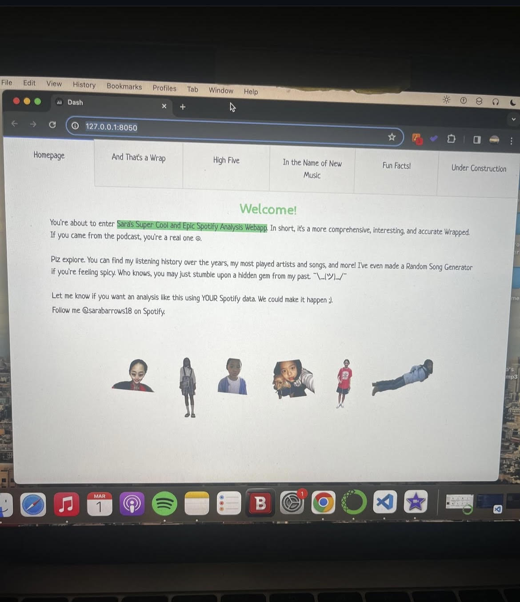
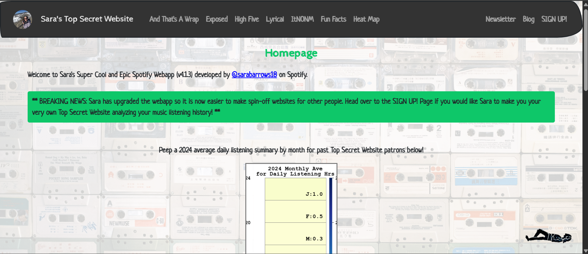

Spotify Wrapped Analysis
Abstract & Background
I like listening to music and found out that you can download your entire Spotify listening history. At first, I just wanted to do this to see some of my stats, but in thinking about how to best visualize this data, I thought hosting via a webapp would be cool. I first found you could download your Spotify data late 2022 and finally got around to making the website in early 2024 ish, so needless to say, this project has been a wip for many years. It's had many iterations and also many roadblocks, but the first official/public release was Jan 18, 2025.
Method & Results
Going into this project, I didn't have any web development experience. I had dabbled in Python and data analysis, but never made a full fledged webapp. I used the Plotly Dash framework in Python to make the webapp because that's what ChatGPT told me to do. ChatGPT was a dear friend throughout this process and I would not have gotten this far without her. I think this was a good call in the end, becuase everything can be done in Python.
v1 - Initial build:
I spent the early days figuring out what I wanted the website to look like and what features to include. I initially began brainstorming stats I wanted to have in the website and its general form. I started v1 somewhere around Jan 2024. It was pretty basic, but really cool to see my vision come to life (albeit just locally). Just creating a really simple Dash App was super cool at the time and then starting to plug my own data into that felt even cooler. Back then I didn't have anything saved on GitHub. I remember I had spent a week straight working until 1am trying to get everything up and running and debugged. I finally got it to a place I was happy with and my laptop malfunctioned, and I lost most of my progress. That was a bummer, but a total wake up call that I really do need to use version control. I was finally able to get back to a working state, not too far from where I left off, and pushed all my changes to GitHub. Fig 1 is a screenshot of the Homepage when the website was in its infancy.

- Homepage: a breif intro and some old rando pics of me. (Easter egg, if you click on the images, it'll take you to some of my favorite Youtube music-related videos).
- And That's a Wrap: a plot of mins vs year for summative listening mins history.
- High Five: top songs and artists every year, wich some pictures of me and my buddies from the year.
- In the Name of New Music: a random song generator to recommend songs pulled from my entire listening discography.
- Fun Facts!: some fun stats about my listening habits including total minutes listened since creating my spotify acct, coutries I've listened to music in, top listened to songs, most back-toback plays, etc.
- Under Construction: where the webapp is headed.
app.py file / root directory, but it was working nonetheless. The src folder was critical to have for the way I deployed with dash-tools via dashtools gui. Equally important was having the line server = app.server in the app.py file so that Render could find the server instance. There are other important files needed for deployment too, namely render.yaml to tell Render how to deploy the app and ofc requirements.txt.
Deploying was honestly one of the biggest challenges with this project. Figuring out how to host it on some server so that it could be publicly accessible was quite the journey. Initially I tried Heroku and PythonAnywhere, but neither did what I wanted. Eventually I found [LINK] this YouTube video using Render. After dozens of rewatches and attempts, I finally got it to work. The worst part is the waiting period - making a change, deploying, sitting around for 5 minutes waiting to see if it'll work, only to have a new error pop up. One of the main challenges I ran into early on had to do with setting up the environment on the server. Even if certain packages weren't neccessary for your code to run, I found they were necessary for the dependencies [wheel, setuptools, etc.]. I think I finally got it to deploy a couple days before I went to Japan back in 2024. It was a chaotic few days trying to scramble to get it done in time, but it all came together in the end. I had to consolidated a lot of the code to be in the root directory/src/the app.py file, but it was working otherwise. The src folder was critical to have for the way I deployed with dash-tools via dashtools gui. Equally important was having the line server = app.server in the app.py file so that Render could find the server instance. There are other important files needed for deployment too, namely render.yaml to tell Render how to deploy the app and ofc requirements.txt.
#### v2 - Added functionality, front end embellishments, & databasing
The next few months (April to July) were full of continuous improvement. I added the "Superb Lyrics" page that features some of my favorite lyrics. I also added the formerly called "Exposing Myself" page that features a search bar and dispays the first date I listened to every song by a specific artist. I really like this feature (on of my favorite parts of the website) because it tells me when I first heard about an artist so I can brag about knowing them before they were cool. The final page I added was called "Rec Me" which provided a page where you could submit a song (or just a message) to me about. There were some other front end changes too - adding background photos, highlighting certain table cells based on the artist, and making a unique cursor for the website on Desktop. One of the main back end changes was changing the way the tab files were stored - I created folders for each tab to segregate tab contents which was a nice organizational touch. Moreover, the big backend upgrade was adding in a database (to connect to incomming Recommendation submittals). I also hooked the DB up to logins so I can track visitors on the page. Initially I used SQLite3 for this. After figuring out how to configure SQLite3 on Render, I couldn't figure out how to actually access the contents of the DB after deploying; I read somewhere that alledgedly SQLite3 and Render aren't compatible.
I knew I had to switch to a different database, but I felt stuck and took a break from July - November. This project was very all or nothing - I'd spend a month working on it nonstop, then take a several month sabbatcal, to finally come pick it back up. When I finally decided to tackle DB mountain, I saw that Google Sheets has an API. In one version I developed, I configured a big spreadsheet to work as my database. This was nice and functional, but in the end a bit of a waste of time, since that method would never be scalable. Instead I went with MongoDB. I had known MongoDB was the way to go for a while, but intimidated to learn how the system works and tried to get around the inevitable wall. Integrating MongoDB with my code was quite the challenge. I tried to to it directly, but that was overwhelming, so I instead made many test apps to add for adding documents to the db. This process was actually soooo painful, and finally, after many days of struggle I realized I couldn't use _ in the db name or collection name. Once I figured this out, it was still somewhat choppy sailing hooking everything up, but at least I wasn't scared of capsizing anymore.
I additionally refactored the back end to be completely class based which made the code way more organized and modular. This was a big undertaking I'd say, but ultimately made the code way more straightforward and such. I also create an "Inputs" file so that variables weren't hard coded and therefore I could begin the process of making the app more dynamic and usable for other people. In the end, v2.1.0 also included some additional fun facts, more embellishments on the Exposing Myself page, a link to the songs on the lyric page, and a Blog tab where I uploaded some photos. This version was the first public release and felt like it was in a solid place. In the moment, it felt like this was the biggest thing I have ever created. I don't know if I'd say the same now, but it definitely felt like an accomplishment to get to this point.
#v3 - Professionalization
I took a break from working on the webapp, but knew there were a lot of improvements I wanted to make. On the back end, I further modularized the code by including a basepage class and just overall making it much more efficient. The look of the webapp also changed - I went from tabs to pages with a menu bar for navigation. I also added a new Heat Map page that shows listening mins every day for the previous year, added even more fun facts, and upgraded the search funtion on the Exposing Myself page (at the request of a buddy). There were also a lot of small chagnes too - adding Spotify profile photo as a logo/tab icon, general formatting/margin improvements, etc. I even added a place for customer webapp sign ups, since the code was finally in a place where making spin off websites for friends was easy to do. Lastly, I added a Newsletter page where I where I post weely Newsletters.
v4 - The Final Version (for now):

- Exposing Myself includes most recent play date and number of plays, among other things
- Heatmap carousel gallery (pulled from DB) of past customers' listening heatmaps
- Revamped the initial popup to sign up to my newsletter
- Add my "logo" and link to a playlist on bottom right corner
- Plotting of other customers' data on And That's a Wrap page
- Bug fixes for heat map
- Further imrpoved BasePage, Page, and MainApp classes for communal attributes (got rid of *kwargs)
- Improved pipeline for faster customer turnaround (and adding a input option for self or customer to easily tailor the website)
- Reorged folder structure for easier navigation
- ...among other things... The general theme for this push were the following:
1. Make the webapp easy to run for other people
2. Final code refactors for modularity and efficiency
3. Allow for dynamic content that references MongoDB, Google Docs, etc. rather than needing a redeploy. For ex. the And That's a Wrap page pulls my, and customers', data from the db which means I don't need to redeploy to add new data to that page.
Discussion & Learnings
I've taken a break since August 2025. There are still numerous things I'd like to add/change, but I have been focussing on other things (or nothing at all). I also have hopes of one day integrating the website with the Spotify API because there is more versatiliy and dynamicism with that data, though I'm thinking of boycotting Spotify since they're pro AI warfare. There were many lessons learned throughout this process. If I could go back, I'd spend more time in the testing phase and focus on making sure everything works as intended rather than rushing to get things done by my self induced due dates. One last note: for a while I was paying for a Render membership so that the website would never spin down causing a min+ wait time to load. After a few months I learned that you can use cron-job.org for pinging the website to keep it awake. Cron Job fails a lot (I think the webapp is on the heavier side) so it's not perfect, but it works well enough for being free.